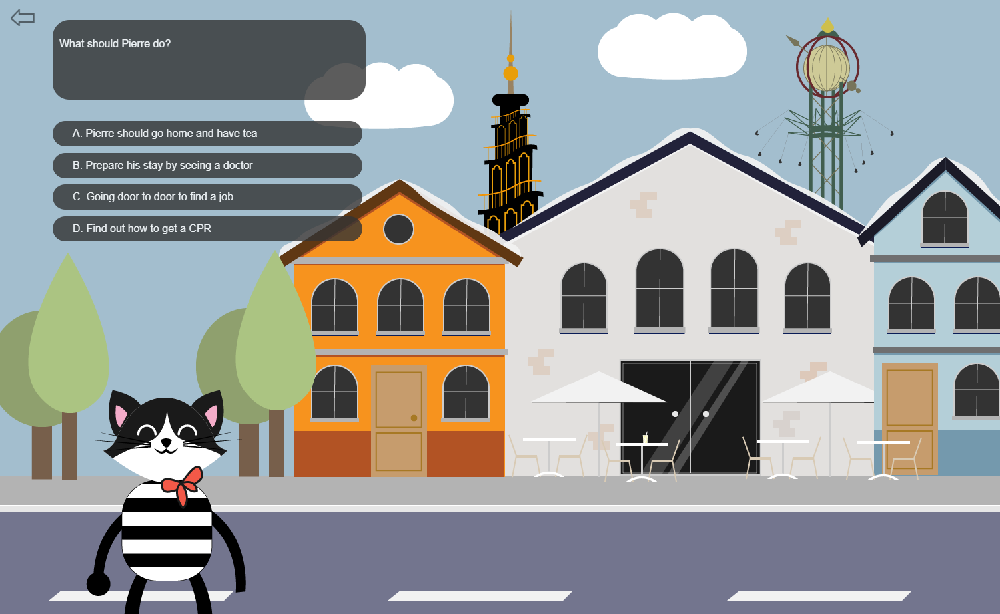
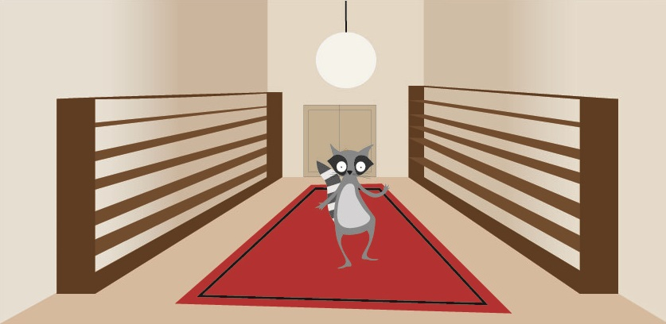

Welcome to Denmark
For a school project, we had to create a short game or animation to help foreign students coming to
Denmark. We decided to use a French Cat, going through the procedure of getting his CPR and Bank
accounts. It was modeled after the "Make your own adventure" books.
Key ideas: Don't over complicate your message.

Snif the game
Working for Viegand Maagøe A/S, we were to create a small game for 3 to 6 year-olds. Snif, the
mascot, has to help children identify energy wasting behavior in the house. I created a memory game
(easily scalable) on the issue of over heating your house.
Key ideas: There isn't a problem that an "if statement" can't solve

Dancing Raccoon
For a school assignment, we had to work with Sprite animation. I decided to do a "dancing" raccoon.
First of all, because racoons are very cute - but also easy to draw and recognize.
Key ideas: The simpler the design, the more effective.